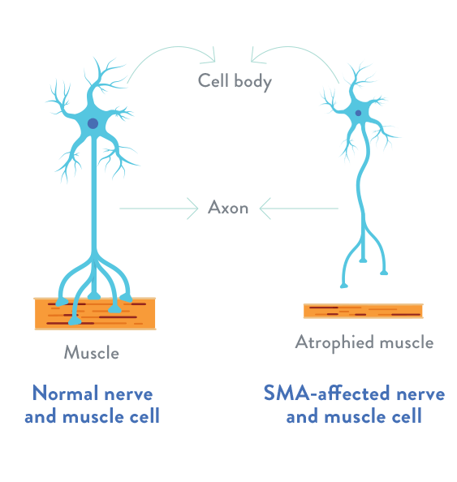

What is SMA?
Spinal muscular atrophy (SMA) is a genetic disease affecting the central nervous system, peripheral nervous system, and voluntary muscle movement (skeletal muscle).
Most of the nerve cells that control muscles are located in the spinal cord, which accounts for the word spinal in the name of the disease. SMA is muscular because its primary effect is on muscles, which don’t receive signals from these nerve cells. Atrophy is the medical term for getting smaller, which is what generally happens to muscles when they’re not stimulated by nerve cells.

SMA involves the loss of nerve cells called motor neurons in the spinal cord and is classified as a motor neuron disease.
In the most common form of SMA (chromosome 5 SMA, or SMN-related SMA), there is wide variability in age of onset, symptoms, and rate of progression. In order to account for these differences, chromosome 5-related SMA, which often is autosomal recessive, is classified into types 1 through 4.
The age at which SMA symptoms begin roughly correlates with the degree to which motor function is affected: The earlier the age of onset, the greater the impact on motor function. Children who display symptoms at birth or in infancy typically have the lowest level of functioning (type 1). Later-onset SMA with a less severe course (types 2 and 3, and in teens or adults, type 4) generally correlates with increasingly higher levels of motor function.
{% endblock content %}